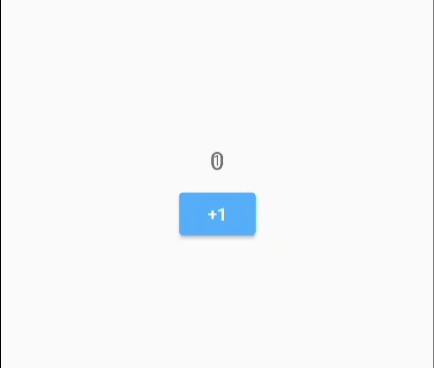
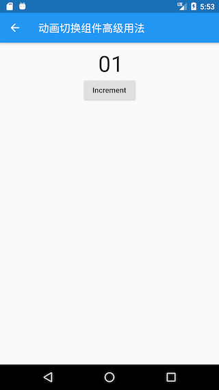
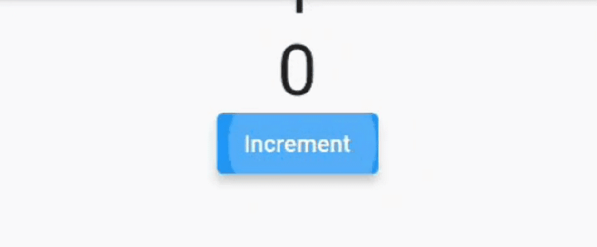

9.6 动画切换组件（AnimatedSwitcher）
实际开发中，我们经常会遇到切换UI元素的场景，比如Tab切换、路由切换。为了增强用户体验，通常在切换时都会指定一个动画，以使切换过程显得平滑。Flutter SDK组件库中已经提供了一些常用的切换组件，如PageView、TabView等，但是，这些组件并不能覆盖全部的需求场景，为此，Flutter SDK中提供了一个AnimatedSwitcher组件，它定义了一种通用的UI切换抽象。
9.6.1 AnimatedSwitcher
1. 简介
AnimatedSwitcher 可以同时对其新、旧子元素添加显示、隐藏动画。也就是说在AnimatedSwitcher的子元素发生变化时，会对其旧元素和新元素做动画，我们先看看AnimatedSwitcher 的定义：
const AnimatedSwitcher({
Key? key,
this.child,
required this.duration, // 新child显示动画时长
this.reverseDuration,// 旧child隐藏的动画时长
this.switchInCurve = Curves.linear, // 新child显示的动画曲线
this.switchOutCurve = Curves.linear,// 旧child隐藏的动画曲线
this.transitionBuilder = AnimatedSwitcher.defaultTransitionBuilder, // 动画构建器
this.layoutBuilder = AnimatedSwitcher.defaultLayoutBuilder, //布局构建器
})
当AnimatedSwitcher的 child 发生变化时（类型或 Key 不同），旧 child 会执行隐藏动画，新 child 会执行执行显示动画。究竟执行何种动画效果则由transitionBuilder 参数决定，该参数接受一个AnimatedSwitcherTransitionBuilder 类型的 builder，定义如下：
typedef AnimatedSwitcherTransitionBuilder =
Widget Function(Widget child, Animation<double> animation);
该builder在AnimatedSwitcher的child切换时会分别对新、旧child绑定动画：
- 对旧child，绑定的动画会反向执行（reverse）
- 对新child，绑定的动画会正向指向（forward）
这样一下，便实现了对新、旧child的动画绑定。AnimatedSwitcher的默认值是AnimatedSwitcher.defaultTransitionBuilder ：
Widget defaultTransitionBuilder(Widget child, Animation<double> animation) {
return FadeTransition(
opacity: animation,
child: child,
);
}
可以看到，返回了FadeTransition对象，也就是说默认情况，AnimatedSwitcher会对新旧child执行“渐隐”和“渐显”动画。
2. 示例
下面我们看一个例子：实现一个计数器，然后在每一次自增的过程中，旧数字执行缩小动画隐藏，新数字执行放大动画显示，代码如下：
import 'package:flutter/material.dart';
class AnimatedSwitcherCounterRoute extends StatefulWidget {
const AnimatedSwitcherCounterRoute({Key key}) : super(key: key);
@override
_AnimatedSwitcherCounterRouteState createState() => _AnimatedSwitcherCounterRouteState();
}
class _AnimatedSwitcherCounterRouteState extends State<AnimatedSwitcherCounterRoute> {
int _count = 0;
@override
Widget build(BuildContext context) {
return Center(
child: Column(
mainAxisAlignment: MainAxisAlignment.center,
children: <Widget>[
AnimatedSwitcher(
duration: const Duration(milliseconds: 500),
transitionBuilder: (Widget child, Animation<double> animation) {
//执行缩放动画
return ScaleTransition(child: child, scale: animation);
},
child: Text(
'$_count',
//显示指定key，不同的key会被认为是不同的Text，这样才能执行动画
key: ValueKey<int>(_count),
style: Theme.of(context).textTheme.headline4,
),
),
ElevatedButton(
child: const Text('+1',),
onPressed: () {
setState(() {
_count += 1;
});
},
),
],
),
);
}
}
运行示例代码，当点击“+1”按钮时，原先的数字会逐渐缩小直至隐藏，而新数字会逐渐放大，如图9-4所示：

上图是第一次点击“+1”按钮后，“0”正在逐渐缩小，而“1”逐渐放大。
注意：AnimatedSwitcher的新旧child，如果类型相同，则Key必须不相等。
3. AnimatedSwitcher实现原理
实际上，AnimatedSwitcher的实现原理是比较简单的，我们根据AnimatedSwitcher的使用方式也可以猜个大概。要想实现新旧 child 切换动画，只需要明确两个问题：
- 动画执行的时机是什么时候？
- 如何对新旧child执行动画？
从AnimatedSwitcher的使用方式我们可以看到：当child发生变化时（子 widget 的 key 或类型不同时则认为发生变化），则重新会重新执行build，然后动画开始执行。
我们可以通过继承 StatefulWidget 来实现AnimatedSwitcher，具体做法是在didUpdateWidget 回调中判断其新旧 child 是否发生变化，如果发生变化，则对旧 child 执行反向退场（reverse）动画，对新child执行正向（forward）入场动画即可。下面是AnimatedSwitcher实现的部分核心伪代码：
Widget _widget;
void didUpdateWidget(AnimatedSwitcher oldWidget) {
super.didUpdateWidget(oldWidget);
// 检查新旧child是否发生变化(key和类型同时相等则返回true，认为没变化)
if (Widget.canUpdate(widget.child, oldWidget.child)) {
// child没变化，...
} else {
//child发生了变化，构建一个Stack来分别给新旧child执行动画
_widget= Stack(
alignment: Alignment.center,
children:[
//旧child应用FadeTransition
FadeTransition(
opacity: _controllerOldAnimation,
child : oldWidget.child,
),
//新child应用FadeTransition
FadeTransition(
opacity: _controllerNewAnimation,
child : widget.child,
),
]
);
// 给旧child执行反向退场动画
_controllerOldAnimation.reverse();
//给新child执行正向入场动画
_controllerNewAnimation.forward();
}
}
//build方法
Widget build(BuildContext context){
return _widget;
}
上面伪代码展示了AnimatedSwitcher实现的核心逻辑，当然AnimatedSwitcher真正的实现比这个复杂，它可以自定义进退场过渡动画以及执行动画时的布局等。在此，我们删繁就简，通过伪代码形式让读者能够清楚看到主要的实现思路，具体的实现读者可以参考AnimatedSwitcher源码。
另外，Flutter SDK中还提供了一个AnimatedCrossFade组件，它也可以切换两个子元素，切换过程执行渐隐渐显的动画，和AnimatedSwitcher不同的是AnimatedCrossFade是针对两个子元素，而AnimatedSwitcher是在一个子元素的新旧值之间切换。AnimatedCrossFade实现原理也比较简单，和AnimatedSwitcher类似，因此不再赘述，读者有兴趣可以查看其源码。
9.6.2 AnimatedSwitcher高级用法
假设现在我们想实现一个类似路由平移切换的动画：旧页面屏幕中向左侧平移退出，新页面从屏幕右侧平移进入。如果要用AnimatedSwitcher的话，我们很快就会发现一个问题：做不到！我们可能会写出下面的代码：
AnimatedSwitcher(
duration: Duration(milliseconds: 200),
transitionBuilder: (Widget child, Animation<double> animation) {
var tween = Tween<Offset>(begin: Offset(1, 0), end: Offset(0, 0))
return SlideTransition(
child: child,
position: tween.animate(animation),
);
},
...//省略
)
上面的代码有什么问题呢？我们前面说过在AnimatedSwitcher的 child 切换时会对新child执行正向动画（forward），而对旧child执行反向动画（reverse），所以真正的效果便是：新 child 确实从屏幕右侧平移进入了，但旧child却会从屏幕右侧（而不是左侧）退出。其实也很容易理解，因为在没有特殊处理的情况下，同一个动画的正向和逆向正好是相反（对称）的。
那么问题来了，难道就不能使用AnimatedSwitcher了？答案当然是否定的！仔细想想这个问题，究其原因，就是因为同一个Animation正向（forward）和反向（reverse）是对称的。所以如果我们可以打破这种对称性，那么便可以实现这个功能了，下面我们来封装一个MySlideTransition，它与SlideTransition唯一的不同就是对动画的反向执行进行了定制（从左边滑出隐藏），代码如下：
class MySlideTransition extends AnimatedWidget {
const MySlideTransition({
Key? key,
required Animation<Offset> position,
this.transformHitTests = true,
required this.child,
}) : super(key: key, listenable: position);
final bool transformHitTests;
final Widget child;
@override
Widget build(BuildContext context) {
final position = listenable as Animation<Offset>;
Offset offset = position.value;
if (position.status == AnimationStatus.reverse) {
offset = Offset(-offset.dx, offset.dy);
}
return FractionalTranslation(
translation: offset,
transformHitTests: transformHitTests,
child: child,
);
}
}
调用时，将SlideTransition替换成MySlideTransition 即可：
AnimatedSwitcher(
duration: Duration(milliseconds: 200),
transitionBuilder: (Widget child, Animation<double> animation) {
var tween=Tween<Offset>(begin: Offset(1, 0), end: Offset(0, 0))
return MySlideTransition(
child: child,
position: tween.animate(animation),
);
},
...//省略
)
运行后，我截取动画执行过程中的一帧，如图9-5所示：

上图中“0”从左侧滑出，而“1”从右侧滑入。可以看到，我们通过这种巧妙的方式实现了类似路由进场切换的动画，实际上Flutter路由切换也正是通过AnimatedSwitcher来实现的。
9.6.3 SlideTransitionX
上面的示例我们实现了“左出右入”的动画，那如果要实现“左入右出”、“上入下出”或者 “下入上出”怎么办？当然，我们可以分别修改上面的代码，但是这样每种动画都得单独定义一个“Transition”，这很麻烦。本节将封装一个通用的SlideTransitionX 来实现这种“出入动画”，代码如下：
class SlideTransitionX extends AnimatedWidget {
SlideTransitionX({
Key? key,
required Animation<double> position,
this.transformHitTests = true,
this.direction = AxisDirection.down,
required this.child,
}) : super(key: key, listenable: position) {
switch (direction) {
case AxisDirection.up:
_tween = Tween(begin: const Offset(0, 1), end: const Offset(0, 0));
break;
case AxisDirection.right:
_tween = Tween(begin: const Offset(-1, 0), end: const Offset(0, 0));
break;
case AxisDirection.down:
_tween = Tween(begin: const Offset(0, -1), end: const Offset(0, 0));
break;
case AxisDirection.left:
_tween = Tween(begin: const Offset(1, 0), end: const Offset(0, 0));
break;
}
}
final bool transformHitTests;
final Widget child;
final AxisDirection direction;
late final Tween<Offset> _tween;
@override
Widget build(BuildContext context) {
final position = listenable as Animation<double>;
Offset offset = _tween.evaluate(position);
if (position.status == AnimationStatus.reverse) {
switch (direction) {
case AxisDirection.up:
offset = Offset(offset.dx, -offset.dy);
break;
case AxisDirection.right:
offset = Offset(-offset.dx, offset.dy);
break;
case AxisDirection.down:
offset = Offset(offset.dx, -offset.dy);
break;
case AxisDirection.left:
offset = Offset(-offset.dx, offset.dy);
break;
}
}
return FractionalTranslation(
translation: offset,
transformHitTests: transformHitTests,
child: child,
);
}
}
现在如果我们想实现各种“滑动出入动画”便非常容易，只需给direction 传递不同的方向值即可，比如要实现“上入下出”，则：
AnimatedSwitcher(
duration: Duration(milliseconds: 200),
transitionBuilder: (Widget child, Animation<double> animation) {
var tween=Tween<Offset>(begin: Offset(1, 0), end: Offset(0, 0))
return SlideTransitionX(
child: child,
direction: AxisDirection.down, //上入下出
position: animation,
);
},
...//省略其余代码
)
运行后如图9-6所示：

上图中“0”从底部滑出，而“1”从顶部滑入。读者可以尝试给SlideTransitionX的direction取不同的值来查看运行效果。
9.6.4 总结
本节我们学习了AnimatedSwitcher的详细用法，同时也介绍了打破AnimatedSwitcher动画对称性的方法。我们可以发现：在需要切换新旧UI元素的场景，AnimatedSwitcher将十分实用。